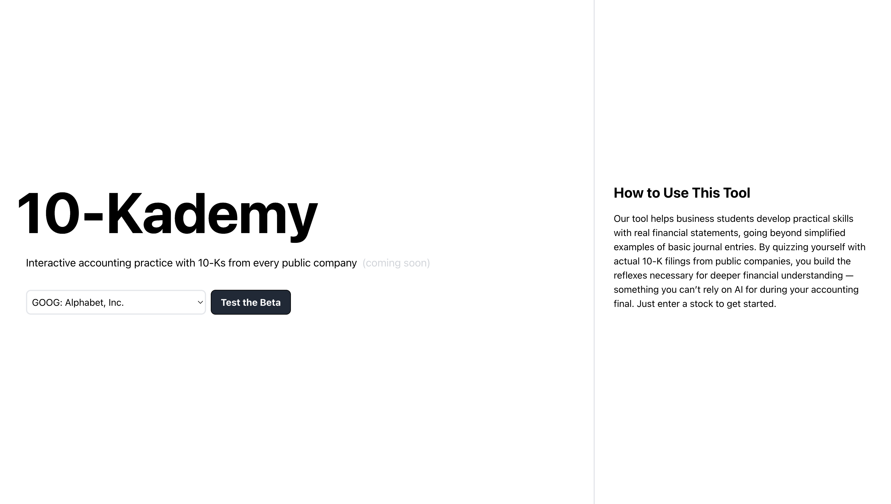
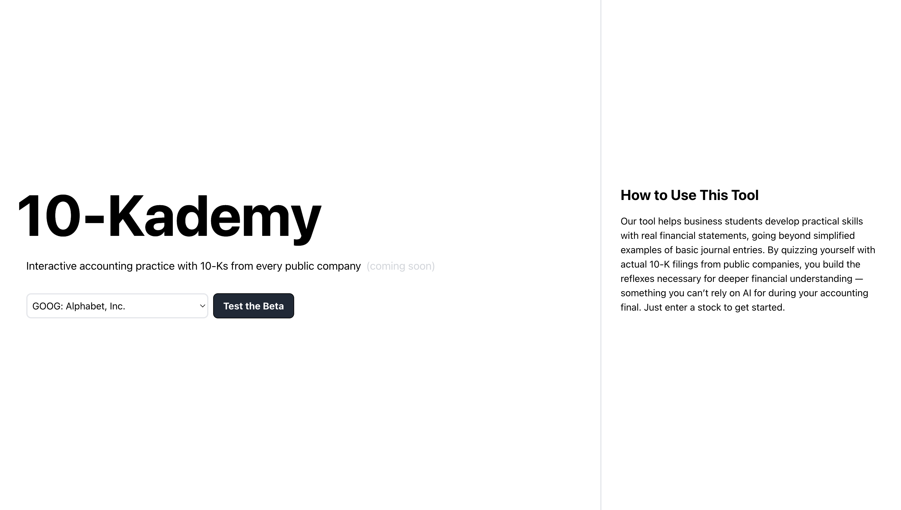
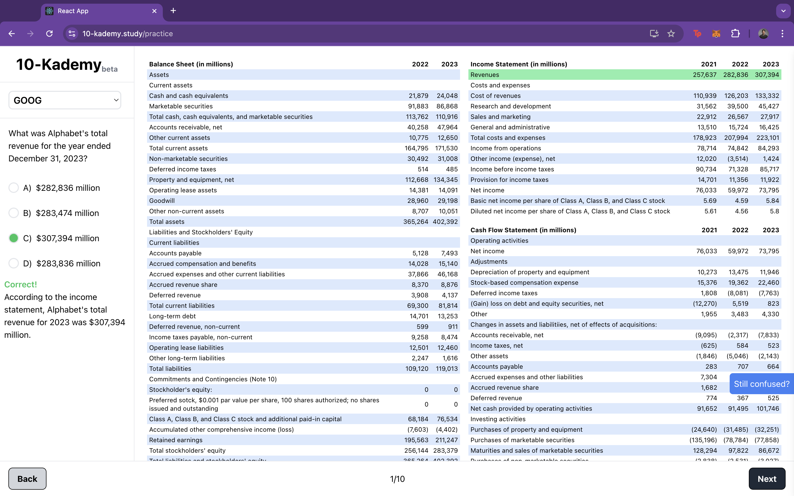

10-Kademy
Built a study tool for MBA students looking to practice accounting with real 10-Ks.
> Hackathon Project
> 2024
 

I co-developed a financial education tool with three friends over the course of 48 hours for UC Berkeley's largest hackathon, Cal Hacks.

The idea stemmed from our experience struggling with an accounting exam. We realized that translating classroom learnings into practical analysis of real financial statements was a common pain point for most students. To bridge this gap, we created a tool that empowers business students to develop practical financial skills beyond simplified textbook examples. By quizzing themselves with actual financial statements from public companies, users build the reflexes needed for deeper financial comprehension—skills that can't be replaced by AI during exams. Just enter a stock ticker to get started.
#SoftwareEngineering #Hackathon #Accounting